使い方
GUIDE
ロックしたまま、
ささやくだけ。
Keep it locked.
Just whisper.
Echona は、横のボタンを押して話すだけで、声を文字にして残す iPhone アプリです。最初に3つだけ設定します。
Echona turns what you say into text: press the side button and talk. Set up three things once, and you're done.
The app's screens are in Japanese. Button names are shown as they appear, with the English meaning in brackets.
01最初の設定First setup
アプリを初めて開くと、3つの画面で案内します。
The first time you open the app, three screens walk you through it.
-
1
保存先を選ぶ
Choose where to save
録音の文字をどこに残すかを選びます。迷ったら「Echona の中だけ」のまま「次へ」で大丈夫。あとから変えられます。
Pick where the text of your recordings goes. Not sure? Leave 「Echona の中だけ」 (Echona only) and tap 「次へ」 (Next). You can change it later.
3つの違いは 保存先の選び方 へ。
The three choices are explained in Where to save.
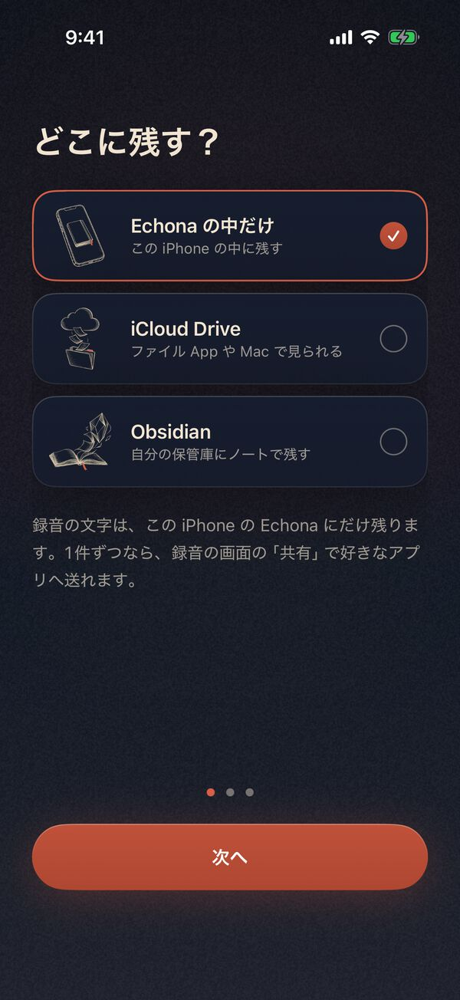
-
2
横のボタンに「録音」を割り当てる
Put recording on the Action button
ここだけは iPhone の設定アプリで行います。
This one is done in the iPhone Settings app.
- 設定 › アクションボタン
- 横にめくって コントロール を選ぶ
- その下のボタンを押し、Echona 録音 を選ぶ
- アプリに戻って「設定しました」
- Settings › Action Button
- Swipe to Controls
- Tap the button under it and choose Echona 録音 (Echona Record)
- Back in the app, tap 「設定しました」 (Done)
「Echona 録音」が見つからないときは、「コントロール」の代わりに「ショートカット」を選び、Echona の「録音 開始/停止」を選びます。
Can't find it? Choose Shortcut instead of Controls, then Echona's 「録音 開始/停止」 (Start/stop recording).
アクションボタンが無い iPhone は「あとで」で次へ進み、録音のしかた のほかの方法で。
No Action button? Tap 「あとで」 (Later) to move on, and see Recording for other ways.
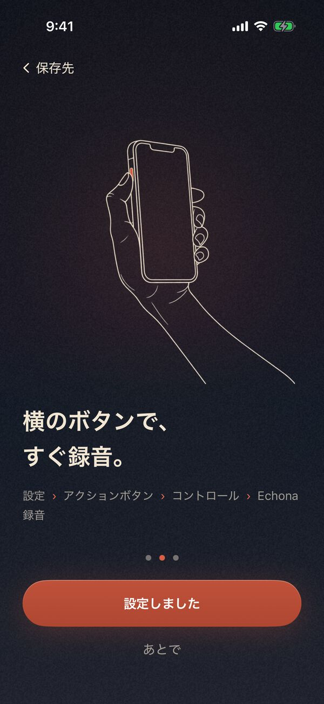
-
3
声を聞く準備
Get ready to listen
「準備する」を押し、マイクと音声認識の2つを「許可」します。日本語の文字起こしに使うデータは、iPhone が初回だけ自動で入れます。3つに ✓ が付いて「準備OK」になれば完了です。
Tap 「準備する」 (Get ready) and choose 「許可」 (Allow) for the microphone and for speech recognition. The first time, iPhone also downloads what it needs for Japanese transcription. When all three have a ✓ and the circle says 「準備OK」 (Ready), you're done.
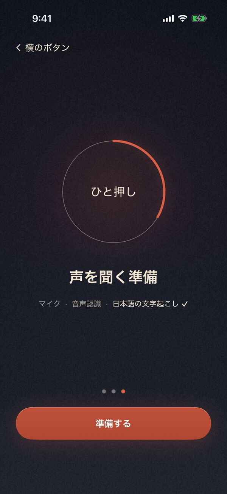
「準備する」Tap 「準備する」 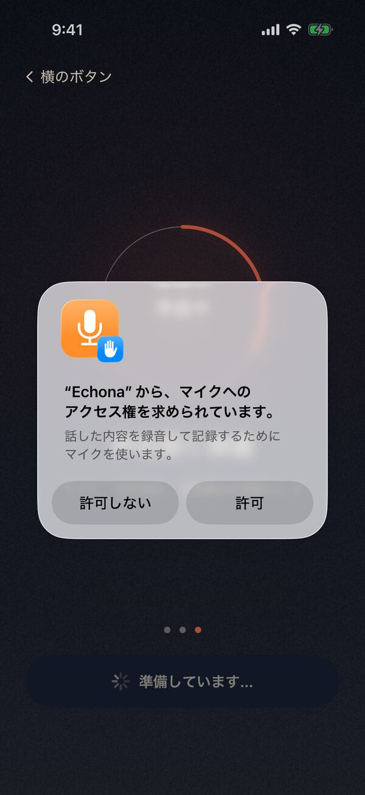
マイク → 許可Microphone → Allow 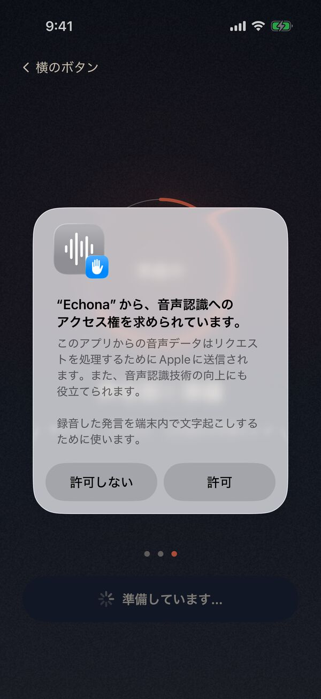
音声認識 → 許可Speech recognition → Allow 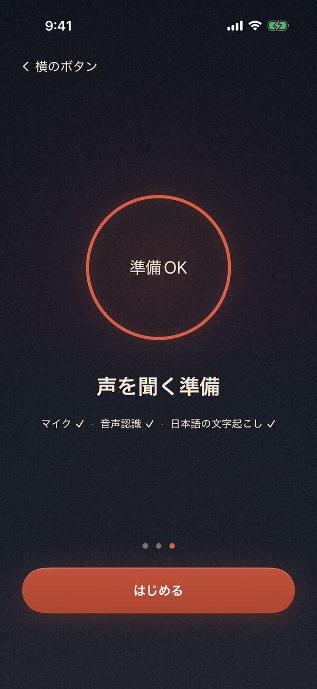
準備OK → はじめるReady → 「はじめる」 (Start) 音声認識の確認に「Apple に送信」とありますが、Echona は iPhone の中だけで文字にします（録音を外へ送りません）。「許可しない」を押してしまったら、iPhone の設定 › アプリ › Echona でオンにできます。
The speech recognition prompt is iPhone's standard wording. Echona transcribes on the iPhone itself and never sends your recordings anywhere. If you tapped 「許可しない」 (Don't Allow), turn it on in Settings › Apps › Echona.
02保存先の選び方Where to save
録音の文字を、どこに残すか。目安はこれだけです。
Where should the text of your recordings live? A quick rule of thumb:
- まず試してみるJust trying it out Echona の中だけEchona only
- Mac やファイル App でも見たいWant to see them on a Mac or in Files iCloud Drive
- Obsidian を使っているAlready use Obsidian Obsidian
どれを選んでも、録音と文字起こしは iPhone の中で行い、音声は外へ送りません。有料の自動まとめは同意後の文字をクラウドへ送ります（プライバシーポリシー参照）。iCloud Drive・Obsidian を選ぶと、文字はあなたの iCloud に同期されます（音声は iPhone の中だけ）。あとから何度でも変えられます。
Whichever you pick, recording and transcription happen on your iPhone, and audio is not uploaded. Optional paid automatic summaries send text to the cloud after consent (see the privacy policy). With iCloud Drive or Obsidian, the text syncs to your own iCloud (audio stays on the iPhone). You can change it any time.
iCloud Drive
録音ごとに文字のファイルができ、ファイル App や Mac の Finder で読めます。
Each recording becomes a text file you can read in the Files app or in Finder on a Mac.
- 設定の保存先で iCloud Drive を選ぶ
- 「保存先：iCloud Drive / Echona」と表示されたら準備完了。録音の文字は専用フォルダ内の Recordings に保存されます
- In Settings, select iCloud Drive as the save destination
- When “保存先：iCloud Drive / Echona” appears, the folder is ready. Recording text is saved under Recordings in the dedicated folder
build 19以降はフォルダ作成・名前入力・フォルダ選択が不要です。iCloud Driveが使えないときはiPhoneの設定を確認し、「もう一度試す」を押してください。以前に選んだ保存先は、切り替えるまで維持されます。
Starting with build 19, no folder creation, naming or picking is needed. If iCloud Drive is unavailable, check your iPhone settings and retry. An existing manually selected destination stays in use until you switch.
Obsidian
録音ごとに、Obsidian の保管庫へノートとして入ります。
Each recording lands in your Obsidian vault as a note.
先に、iPhone の Obsidian アプリで「保管庫を新規作成」で、iCloudに保存 をオンにして保管庫を作っておきます。
First, in the Obsidian iPhone app, use Create new vault with Store in iCloud turned on.
- Obsidian のカードを選び「フォルダを選ぶ」
- iCloud Drive › Obsidian › 自分の保管庫 と開く
- 保管庫の中で、右上の 開く。アプリに戻ったら「次へ」
- Pick the Obsidian card, then 「フォルダを選ぶ」 (Choose folder)
- Open iCloud Drive › Obsidian › your vault
- Inside the vault, tap Open at the top right. Back in the app, tap 「次へ」 (Next)
「Obsidian」フォルダそのものではなく、その中の自分の保管庫に入ってから「開く」。カードの下に保管庫の名前で「✓ 保存しています」と出れば完了です。
Go into your vault first, not just the “Obsidian” folder, then tap Open. Done when “✓ …に保存しています” (Saving to …) shows your vault's name under the cards.
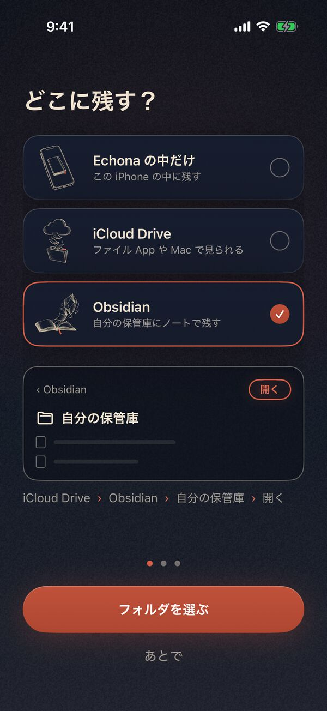
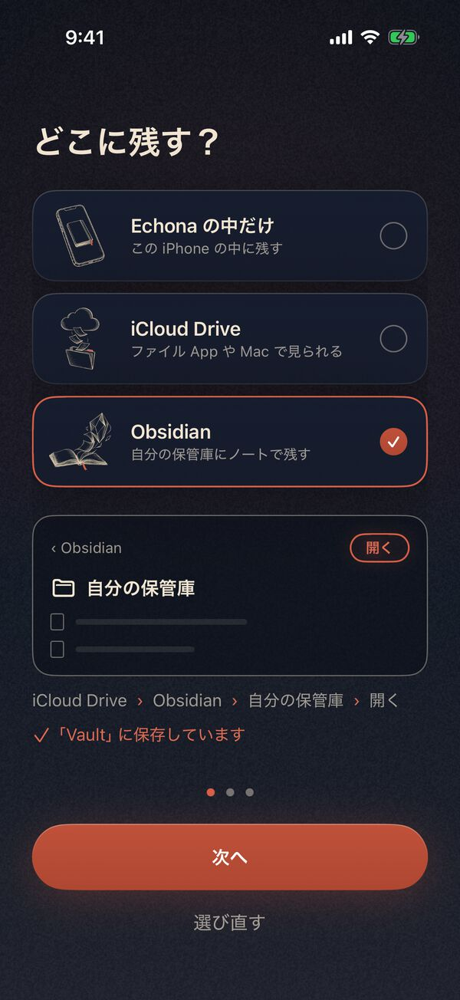
あとから変える
Changing it later
今日の画面の右上の歯車 › 保存先の「変更」。カードを選び、フォルダを選ぶ2つは「フォルダを選ぶ」（選んであれば「フォルダを選び直す」）、「Echona の中だけ」は「Echona の中だけにする」で決まります。
The gear at the top right of the Today screen › 「変更」 (Change) next to 保存先 (Save to). Pick a card; for the two folder options use 「フォルダを選ぶ」 (Choose folder) or 「フォルダを選び直す」 (Choose again), and for Echona only tap 「Echona の中だけにする」 (Keep in Echona only).
- フォルダへは、iPhone のロックを解除したときや、アプリを開いたときに書き出します。
- 保存先を変えると、新しいフォルダにすべての録音を書き直します。前のフォルダのファイルはそのまま残ります。
- Files are written to the folder when you unlock your iPhone or open the app.
- Changing the destination rewrites every recording into the new folder. Files in the old folder stay where they are.
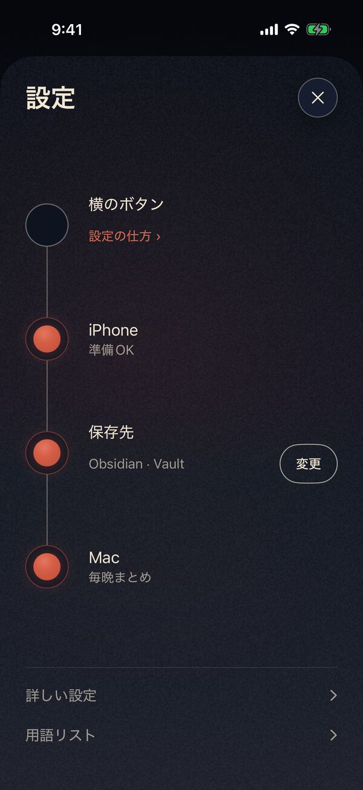
03毎日の使い方Everyday use
直す・共有・削除は「録音の画面」から。今日の画面で題名を押すか、下の「録音の一覧」から録音を押すと開きます。
Fix, Share and Delete live on a recording's screen. Open it by tapping a title on the Today screen, or a recording in 「録音の一覧」 (All recordings) at the bottom.
録音のしかた
Recording
横のボタンを押して話し、もう一度押して止めます。ロックしたままで大丈夫。ロック中に録った分は、次にアプリを開いたときに文字になることがあります。
Press the Action button, talk, and press it again to stop. Your iPhone can stay locked. Recordings made while locked may be transcribed the next time you open the app.
アクションボタンが無い iPhone は、次のどれかで。
No Action button? Use any of these:
- アプリの「録音」ボタン
- コントロールセンターに「Echona 録音」を追加（コントロールセンターを開き、左上の ＋ › コントロールを追加 › Echona）
- ロック画面の下のボタンを「Echona 録音」に替える（ロック画面を長押し › カスタマイズ › 下のボタンの［−］で外し、［＋］から Echona 録音）
- Siri に「Echonaで録音」と話す
- The 「録音」 (Record) button in the app
- Add “Echona 録音” to Control Center (open Control Center, tap + at the top left › Add a Control › Echona)
- Put “Echona 録音” on the Lock Screen (touch and hold the Lock Screen › Customize › tap − on a bottom button, then + and choose Echona 録音)
- Ask Siri: “Echonaで録音”
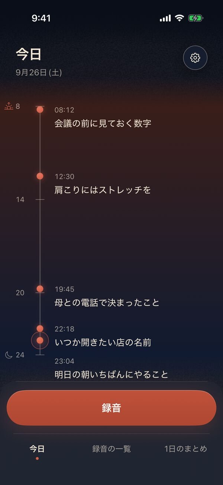
誤字の手直し
Fixing mistakes
録音の画面の「直す」で文字を直して「保存」。直した語は用語リストに覚えます。
On a recording's screen, tap 「直す」 (Fix), correct the text and tap 「保存」 (Save). Echona remembers the words you fixed.
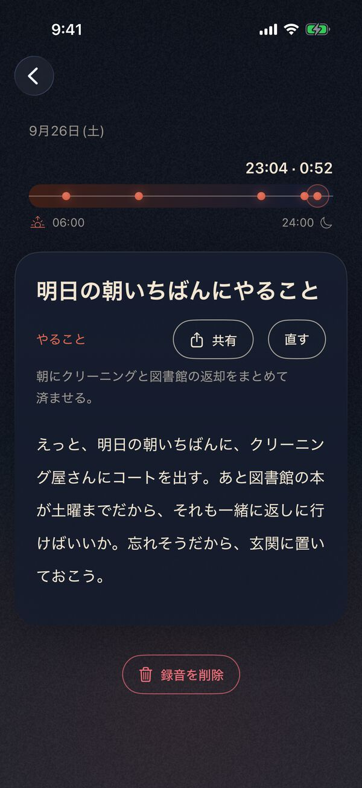
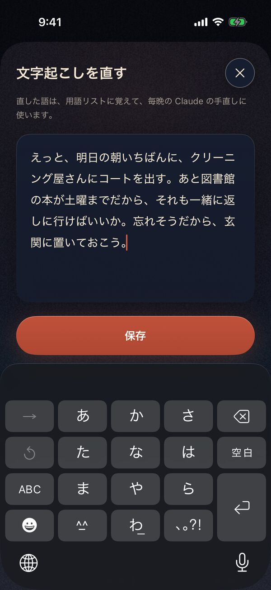
削除
Deleting
録音の画面のいちばん下「録音を削除」 › 「削除」。取り消せません。
At the bottom of a recording's screen, 「録音を削除」 (Delete recording) › 「削除」 (Delete). This can't be undone.
今の保存先のフォルダにある、その録音のノートも消えます。1日のまとめや用語リスト、前の保存先のフォルダのファイルは残ります。
Its note in your current save folder is deleted too. Daily summaries, the word list and files in a previous save folder stay.
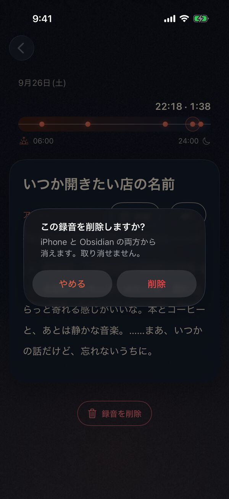
1日のまとめ
Daily summary
Mac の Claude Desktop（Anthropic 社のアプリ）の定期タスクが毎晩、その日の録音から1日のまとめを作り、アプリの「1日のまとめ」で読めます。
A scheduled task in Claude Desktop (an app by Anthropic) on your Mac writes a summary of the day's recordings every night. Read it under 「1日のまとめ」 (Daily summary) in the app.
Mac の定期タスクは、その文字を Anthropic 社に送って処理します（使うかは任意で、あなた自身のアカウントで設定します）。保存先が iCloud Drive か Obsidian のときに使えます。Mac と Claude の有料プランが要ります。なくても Echona はそのまま使えます。
The Mac task sends that text to Anthropic for processing (optional, set up with your own account). Works when you save to iCloud Drive or Obsidian. Needs a Mac and a paid Claude plan. Echona works fine without it.
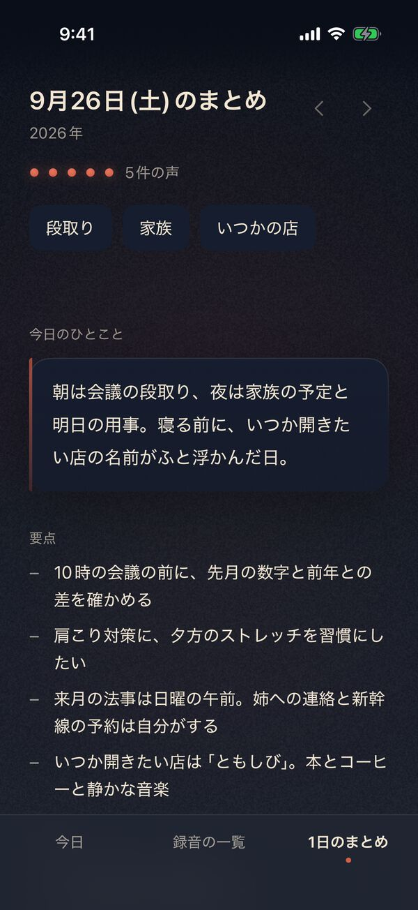
04サポートSupport
- 動作条件
- iOS 26 以降（iPhone 11 以降、iPhone SE 第2世代以降）。文字起こしは日本語のみ。
- 題名・分類（端末内 AI）
- Apple Intelligence 対応機種（iPhone 15 Pro / 15 Pro Max、iPhone 16 シリーズ・16e、iPhone 17 シリーズ・Air 以降）で Apple Intelligence をオン。
- お問い合わせ
- because232t@gmail.com
- Requirements
- iOS 26 or later (iPhone 11 or later, iPhone SE 2nd generation or later). Transcription supports Japanese only.
- Titles and categories (on-device AI)
- An Apple Intelligence iPhone (iPhone 15 Pro / 15 Pro Max, iPhone 16 family incl. 16e, iPhone 17 family and Air, or later) with Apple Intelligence turned on.
- Contact
- because232t@gmail.com